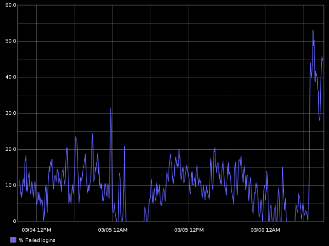
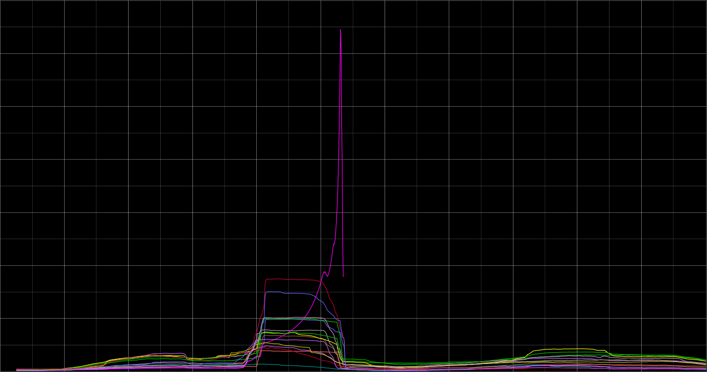

Metric: Greek metrikē, from feminine of metrikos in meter, by measure, from metron measure — more at measure
Metric: A standard of measurement
No metric exists that can be applied directly to happiness

(Did for us! And still does...)
librrdlog.info()printf()grepProcess all webserver logs:
15+ min
We have no idea why these filesystems began to act up.
But we do know when and where to look in the logs.
(Originally built by Etsy, inspired by Flickr)
Send UDP with identifier, value & type
Collect & generate regular statistics
Store, Graph and act
Your application + some client
StatsD
Graphite / Hosted / Other
FAST
Small overhead
Doesn`t add to failure domain
(~2500 LOC, including test-suite & packaging)
Gives you absolute reported value + normalized "per second"-numbers
Stay the same until you tell it otherwise
Outputs number of different values seen
Min/mean/ang/std.dev/max + 90th percentile for all reported values
amqp datadog ganglia Graphite
librato OpenTSDB socket.i0 statsd zabbix
...
Don´t worry - clones in pretty much all languages.

We have a hit-rate <50%
Varnish outputs more data than it ingests.
Varnish outputs less data than it ingests!
(Go fix it!)

(Put it on a dashboard, send e-mails, rotating lights, klaxons, &c!)


(Mostly because Graphite is a PITA to set up)
Don`t waste too much time on it!
How about 1000x data?
Haribo, NASA, One.com
/